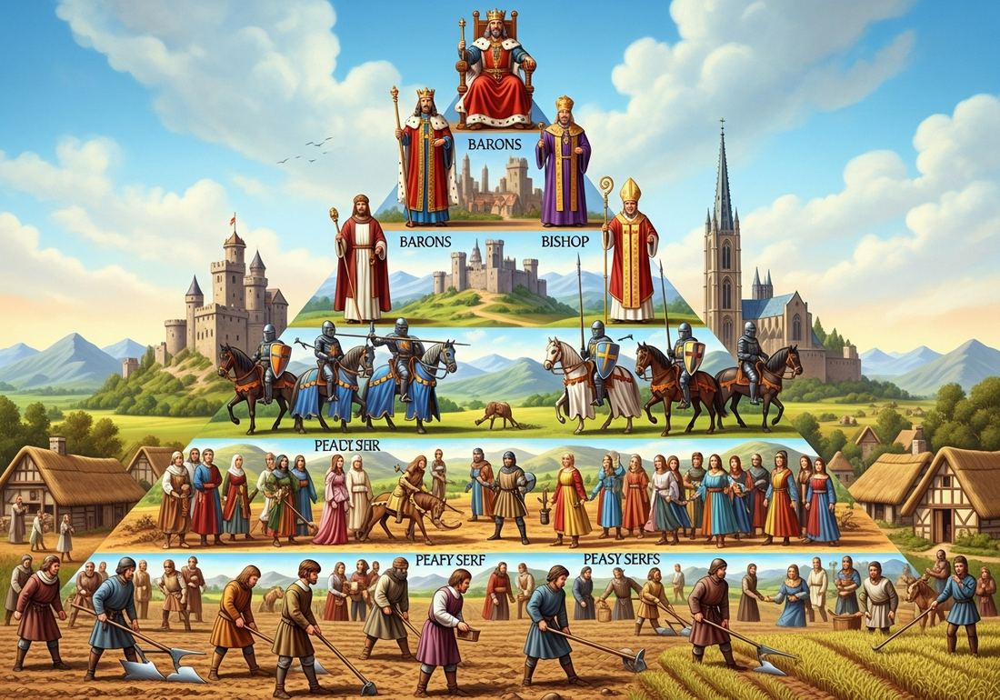
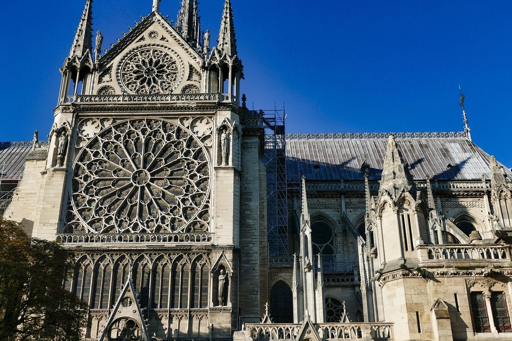

1.6 Developments in Europe
- LO-A: Feudalism and political decentralization: Medieval Europe had no equivalent to the Song Dynasty's centralized bureaucracy or the Abbasid Caliphate's unified governance. Power was fragmented among kings, nobles, and local lords through the feudal hierarchy: the king granted land (fiefs) to nobles in exchange for military service; nobles granted parcels to knights; knights governed manors worked by serfs. Authority was personal, local, and contracted, not administrative and centralized.
- LO-B: Explain the role of the Catholic Church in…: Manorialism and serfdom: The economic foundation of medieval Europe was the manor, a largely self-sufficient agricultural estate. Serfs were legally bound to the land: they could not leave without the lord's permission, owed labor service on the lord's fields, and paid fees to use mills and other facilities. In exchange, they received protection and access to land. Serfdom was not slavery (serfs had some legal protections and could not be arbitrarily killed) but severely restricted freedom.
- LO-C: Explain how feudalism and manorialism organized medieval European…: The Catholic Church: The Church was medieval Europe's most powerful institution, more culturally influential than any king. It controlled education (universities, cathedral schools), hospitals, and moral authority over daily life. The pope's claim to spiritual authority over all Christians gave the Church a power base independent of and sometimes superior to secular rulers. The Investiture Controversy (1076–1122) demonstrated this tension: Pope Gregory VII excommunicated Holy Roman Emperor Henry IV over the right to appoint bishops.
- LO-D: Explain how the Crusades affected European interactions with…: The Crusades and cultural contact: Pope Urban II's call for Crusade in 1095 sent European armies to the Holy Land, motivated by religious devotion, political ambition, and economic opportunity. The Crusades ultimately failed to permanently hold Jerusalem, but they created lasting channels of cultural contact with the Islamic world, through which Islamic goods, technologies, and translated texts entered Europe.
Try each question before revealing the answer.
1. Medieval Europe was politically decentralized while Song China was highly centralized. What were the main consequences of this difference for governance and economic development?
2. The Roman Catholic Church claimed authority over all Christians in medieval Europe, including kings and emperors. What gave the Church this extraordinary claim, and what were its limits?
3. Serfs in medieval Europe could not be bought and sold but could also not leave the land without permission. How did serfdom differ from chattel slavery, and how were the systems similar?
4. The Crusades ultimately failed to permanently hold Jerusalem. In what ways might the Crusades still be considered historically significant despite this military failure?
5. Medieval European universities like Bologna (1088) and Paris (c. 1150) emerged in the same period as Islamic madrasas and Chinese Confucian academies. What does the cross-cultural emergence of formal educational institutions suggest about state formation and social development?
- Explain how and why European states were established, expanded, and maintained
- Explain the role of the Catholic Church in shaping medieval European political and cultural life
- Explain how feudalism and manorialism organized medieval European society and economy
- Explain how the Crusades affected European interactions with the Islamic world
Tap a term for its definition.
-
Definition: A political and military system of medieval Europe in which kings granted land ( fiefs ) to nobles in exchange for military service and loyalty; nobles granted land to knights; the entire system was based on personal relationships of obligation rather than bureaucratic administration. Significance: Produced a highly decentralized political structure, power was fragmented among hundreds of lords at various levels, which contrasted sharply with the centralized bureaucracies of Song China and the Abbasid Caliphate.
-
Definition: The economic system of medieval Europe organized around the manor, a large agricultural estate owned by a lord, worked by serfs, and designed to be largely self-sufficient. Significance: Was the dominant economic organization of medieval Europe through roughly the 12th century; declined as towns, commerce, and a money economy expanded; represented a primarily agricultural, subsistence-oriented economy rather than a commercial one.
-
Definition: A condition of legal unfreedom in which peasants (serfs) were bound to the land. They could not leave without the lord's permission, owed labor service and fees to the lord, but could not be bought and sold as chattels. Significance: The dominant labor condition for most medieval Europeans; declined in Western Europe after the Black Death (1347–1353) gave peasants more bargaining power; persisted longer in Eastern Europe. Distinguished from slavery by serfs' legal personhood and customary rights.
-
Definition: The dominant Christian institution in Western Europe, headed by the Pope in Rome; claimed spiritual authority over all Christians and controlled access to the sacraments believed necessary for salvation. Significance: Medieval Europe's most powerful cultural institution; ran schools, universities, hospitals; controlled education and moral authority over daily life; its claim to authority over secular rulers produced constant tension with kings and emperors.
-
Definition: A conflict (1076–1122) between the papacy and the Holy Roman Emperor over the right to appoint (invest) church officials; famously involved Pope Gregory VII excommunicating Emperor Henry IV and Henry's dramatic submission at Canossa (1077). Significance: The defining conflict between papal and secular authority in medieval Europe; ended in a compromise (Concordat of Worms, 1122) that divided ecclesiastical and temporal authority; demonstrated both the Church's power and its ultimate limits.
-
Definition: A series of military expeditions (1095–1291) called by popes to recapture the Holy Land (Jerusalem and surrounding territories) from Muslim control; motivated by religious devotion, political ambition, and economic interest. Significance: Failed to permanently hold Jerusalem; but created lasting commercial and cultural contacts between Western Europe and the Islamic world; contributed to transfer of Islamic knowledge (including Greek texts in Arabic) into European intellectual life.
-
Definition: The continuation of the eastern Roman Empire, centered at Constantinople (present-day Istanbul); maintained Greek language, Orthodox Christianity, and Roman administrative traditions until its fall to the Ottoman Turks in 1453. Significance: A Christian empire that preserved Roman law, Greek learning, and Orthodox Christianity; its position bridging Europe and Asia made it a commercial crossroads; its weakening after the Fourth Crusade (1204) accelerated its eventual fall.
-
Definition: The dominant intellectual method of medieval European universities, which attempted to reconcile Christian theology with Greek philosophy (especially Aristotle) through rigorous logical analysis. Significance: Produced thinkers like Thomas Aquinas; was stimulated by the influx of Aristotle's works in Arabic translation from Islamic Spain; represents the intellectual framework through which Europe engaged with the Greek and Islamic scholarly traditions.
Feudalism: Power Without Bureaucracy

The feudal hierarchy: power flowed through personal relationships of obligation between lord and vassal, not through a bureaucratic administrative state. Each lord owed loyalty and military service upward; each subordinate received land and protection. AI-generated illustration (Google Gemini, 2025), commercially licensed.
If you had to identify the single most important difference between medieval Europe and the other major civilizations of c. 1200–1450, it would be this: Europe had no centralized bureaucratic state. While Song China administered 100 million people through a civil service exam system, and the Abbasid Caliphate governed a multi-continent empire through Islamic legal institutions and a literate administrative class, Western Europe was fragmented among hundreds of competing political units, kingdoms, duchies, counties, city-states, connected through a web of personal obligations called feudalism.
The feudal system worked through a chain of personal relationships: a king granted territories (fiefs) to powerful nobles (dukes, counts, barons) in exchange for their oath of military loyalty and service. These nobles in turn granted smaller parcels to knights in exchange for military service. At the bottom of the hierarchy were the peasants, mostly serfs, who worked the land. Each relationship was personal: the vassal owed loyalty to his specific lord, not to an abstract state or nation. If the king died or the lord proved abusive, the entire structure of obligation had to be renegotiated.
This system produced an extremely decentralized political landscape. A medieval king often had less actual power than his title suggested, major nobles had their own armies, controlled their own territories, and could effectively defy royal authority if they chose to. The Holy Roman Emperor, the most powerful ruler in central Europe in theory, was routinely challenged by the combined power of German princes who elected him and could not be permanently overruled. Medieval European history is largely a story of weak central authority, constant competition among lords, and the gradual, uneven construction of stronger monarchies over many centuries.
Manorialism and Serfdom: The Agricultural Foundation
The economic foundation of this feudal political system was the manor: a large agricultural estate owned by a lord and worked by serfs. The manor aimed at self-sufficiency, producing its own grain, meat, cloth, and basic crafts, relying on outside trade only for luxury goods and specialized items like salt and iron. At the center of the manor were the lord's house (or castle), a church, a mill, and a blacksmith; surrounding them were strips of agricultural land divided among serfs and the lord's own fields (demesne).
Serfs, the majority of medieval Europeans, were legally bound to the land. They could not leave the manor without the lord's permission, could not marry without paying a fee, owed several days of labor per week working the lord's fields (in addition to their own strips), and paid fees to use the mill, the oven, and other facilities the lord controlled. In exchange, they received access to land for their own subsistence and the lord's protection, a significant benefit in a violent period when organized armies and raiders threatened isolated agricultural communities.
Serfdom was not chattel slavery: serfs were legal persons with some customary rights, could not be arbitrarily killed, and their obligations were to the land rather than to the lord's person (if the estate changed hands, serfs passed with it under the new owner). But it was a profoundly unfree condition that limited occupational mobility, geographic movement, and economic opportunity. The condition of serfs began to improve in Western Europe after the Black Death (1347–1353), which killed roughly one-third of Europe's population and gave surviving peasants far greater bargaining power, lords desperate for agricultural labor had to offer better terms.
The Catholic Church: Europe's Most Powerful Institution

Notre Dame Cathedral in Paris (begun 1163 CE), a physical expression of the Church's cultural and spiritual dominance over medieval European life, built over generations through community labor and Church wealth. Image credit not specified.
In this politically fragmented landscape, one institution provided unity, cultural coherence, and moral authority across all of Western Europe: the Roman Catholic Church. The Church's power rested on its monopoly over salvation. Medieval Christians believed, genuinely and intensely, that eternal life or damnation depended on proper reception of the sacraments (baptism, communion, confession, last rites, marriage). The Church controlled access to all of these. A person who died excommunicated was understood to face damnation; a ruler whose kingdom was placed under interdict (collective punishment denying sacraments to the entire population) faced popular outrage and political crisis.
This gave the papacy extraordinary leverage over secular rulers. The Investiture Controversy (1076–1122) was the defining conflict: Pope Gregory VII excommunicated Holy Roman Emperor Henry IV over the right to appoint (invest) church officials. Henry, fearing the political consequences of being excommunicated, made the dramatic journey to Canossa in northern Italy in January 1077, standing barefoot in the snow for three days to beg papal forgiveness. The episode illustrated both the Church's power and its complexity: Henry was eventually forgiven and continued fighting the political battle for decades. The conflict was eventually resolved in the Concordat of Worms (1122), which divided ecclesiastical and temporal authority in a compromise that satisfied neither side completely.
Beyond politics, the Church was medieval Europe's dominant cultural institution:
- It ran virtually all hospitals, schools, and charitable institutions.
- It founded and operated Europe's first universities (Bologna in 1088, Paris c. 1150, Oxford c. 1167).
- It maintained Latin as a common intellectual and diplomatic language across politically fragmented kingdoms.
- It commissioned the era's greatest artistic and architectural achievements, cathedrals, illuminated manuscripts, and religious art that expressed Christian devotion and the Church's cultural centrality across European life.
- Through monasteries, it preserved ancient manuscripts and produced most of the era's scholarship.
The Crusades: Violence, Commerce, and Cultural Contact
In 1095, Pope Urban II called on Western European knights to take up arms and march to the Holy Land, to "liberate" Jerusalem from Muslim control and defend Eastern Christians from the Seljuk Turks. The response was extraordinary: tens of thousands of knights, peasants, and clergy from across Europe took the cross and marched east. Their motivations were mixed, genuine religious devotion, desire for adventure and wealth, opportunities to escape debts and obligations at home, and for nobles, political expansion.
The First Crusade (1096–1099) captured Jerusalem and established a series of Crusader states in the Levant. But these states were always militarily precarious, surrounded by Islamic powers that were often more organized and better-supplied. Saladin, the Ayyubid sultan, recaptured Jerusalem in 1187. Subsequent Crusades attempted to retake it with diminishing success. The Fourth Crusade (1202–1204) catastrophically sacked Constantinople, a Christian city, instead of reaching the Holy Land, catastrophically damaging Byzantine power and European-Byzantine relations. The last significant Crusader fortresses fell in 1291.
By almost any military standard, the Crusades failed. Yet their historical significance extends far beyond the battlefield:
- Commercial contacts: Italian city-states (Venice, Genoa, Pisa) provided naval transport for Crusading armies and in return gained trading privileges in Crusader states and then across the eastern Mediterranean. These commercial connections channeled Islamic goods into European markets and stimulated Italian commercial development, the foundation of the later Renaissance economy.
- Knowledge transfer: Crusaders encountered Arabic translations of Aristotle, Islamic mathematics, medicine, and philosophy. Some of these works made their way back to Europe; more entered through Islamic Spain (Al-Andalus) and Sicily, where translation schools produced Latin versions that reshaped European intellectual life in the 12th century.
- Political consequences: The Crusades weakened both the papacy (whose credibility suffered with each failed expedition) and the Byzantine Empire (catastrophically after 1204), contributing to the conditions that would produce the later Renaissance and Reformation in Europe.
Medieval Intellectual Life: Universities and Scholasticism
Despite Europe's relative poverty and political fragmentation compared to contemporaneous civilizations, the medieval period produced one important institutional innovation: the university. Bologna (founded 1088), Paris (c. 1150), Oxford (c. 1167), Cambridge (1209), and Salamanca (1218) were the world's first institutions to grant degrees based on a formal curriculum of study, producing not just educated individuals but recognized credentials in law, medicine, and theology.
Medieval universities were the incubators of Scholasticism, the dominant intellectual method of the period, which attempted to reconcile Christian theology with the recently recovered works of Aristotle (arriving in Latin translation from Arabic via Islamic Spain and Sicily). Thinkers like Thomas Aquinas (1225–1274) worked to demonstrate that reason and faith were compatible, that Aristotelian logic and Christian theology could be harmonized through careful analysis. Aquinas's Summa Theologica is one of the most ambitious intellectual syntheses in world history.
The recovery of Aristotle via Arabic translation was itself a consequence of cultural contact with the Islamic world, a reminder that the European intellectual tradition was not self-contained but deeply shaped by knowledge transmitted through Islamic scholars who had preserved, translated, and extended Greek philosophy during the centuries when this learning was largely lost in Western Europe.
These videos will help you review Developments in Europe and solidify key concepts before your exam.
- The papacy had absolute authority over secular rulers and could remove them at will
- The Investiture Controversy ended with a complete victory for papal authority
- Secular rulers generally accepted papal authority without resistance
- The papacy held significant moral and spiritual leverage over secular rulers but could not enforce compliance through military force alone
- The Crusades prompted European rulers to develop a centralized bureaucracy modeled on Islamic administrative systems
- The Crusades resulted in the permanent Christianization of the Holy Land
- Contact with the Islamic world during the Crusades helped channel Islamic knowledge (including Greek texts) and commercial opportunities into Western Europe
- Crusading experience led directly to Europe's development of gunpowder weapons by 1200 CE
- Epidemic disease consistently strengthens existing social hierarchies by making lower classes more dependent on elite protection
- Demographic catastrophe can produce unintended social transformations by disrupting the labor supply on which existing economic systems depend
- The Black Death caused the collapse of feudalism in all regions of Europe simultaneously by 1350
- European peasants organized collective political movements to demand legal rights in the aftermath of the Black Death
- Medieval European monarchs generally governed with less absolute power than rulers in contemporaneous China or the Islamic world because of institutional constraints
- The Catholic Church used its spiritual authority to compel European kings to recognize the rights of common people
- English nobles in 1215 were motivated primarily by a commitment to universal human rights rather than the protection of their own privileges
- Feudal political culture in Europe produced democratic government through the natural evolution of lord-vassal relationships
- The Italian city-states' commercial wealth funded the Catholic Church's construction of Gothic cathedrals across Western Europe
- Italian merchants' dominance of Mediterranean trade prevented economic development in the rest of Western Europe until the 16th century
- The financial infrastructure developed in medieval Italian cities provided the institutional foundation for European overseas commercial expansion after 1450
- The joint-stock company model was adopted directly from Islamic banking practices that Crusaders encountered in the eastern Mediterranean
Answer parts A, B, and C. Direct, specific responses only. Do not write an essay.
Part A
Briefly describe ONE way the feudal system differed from the Song Dynasty's civil service bureaucracy as a system of political organization.
Part B
Briefly explain ONE way the Catholic Church's cultural authority shaped daily life or political power in medieval Europe.
Part C
Briefly explain ONE way the Crusades facilitated cultural or commercial exchange between Western Europe and the Islamic world.
Write a full essay with thesis, contextualization, evidence, and historical reasoning. Acknowledge other factors (feudal system, economic organization, Crusades, Byzantine tradition) but argue a position on the relative significance of the Church. Historical reasoning skill: Argumentation.